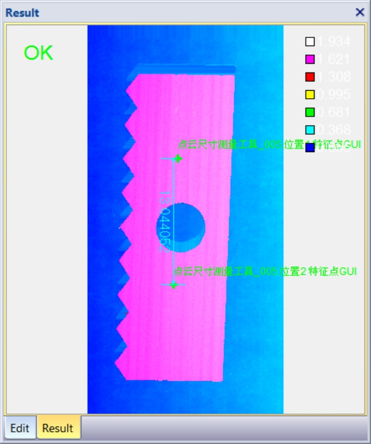
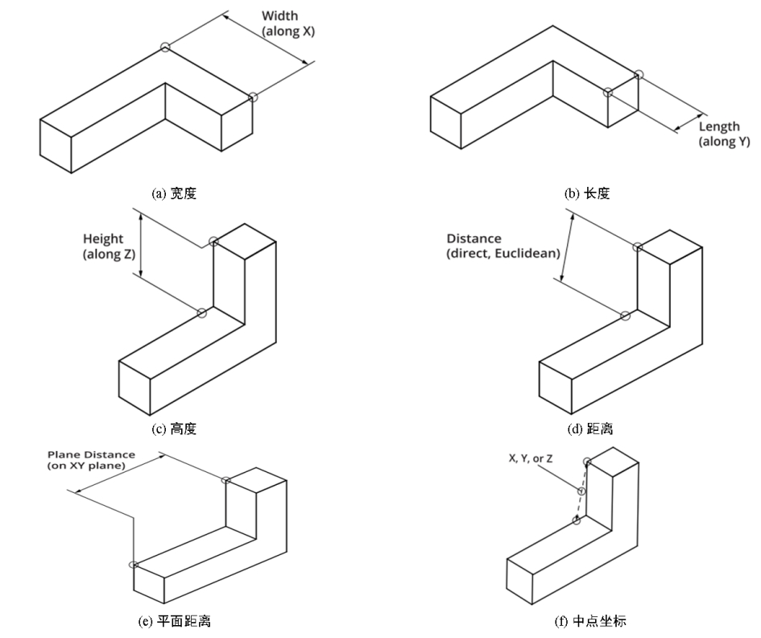

对深度图像中某两个特征点之间的尺寸信息进行测量，图1所示为两个特征点之间的长度信息。

| 分类 | 参数名称 | 参数描述 |
|---|---|---|
| 属性窗口 | 尺寸 特征类型 | 深度数据的尺寸类型，以便计算两个特征点的距离或中点，分为6种：宽度、长度、高度、欧氏距离、平面距离、中点。 |
| 系数补偿 | 测量结果系数补偿，一般为1，用于补偿成像等系统误差。 | |
| 固定补偿 | 测量结果固定补偿，一般为0，用于补偿成像等系统误差。 | |
| 阈值范围下限 | 判定条件的下限值，取值范围：[-100000,100000]，单位：mm。 | |
| 阈值范围上限 | 判定条件的上限值，取值范围：[-100000,100000]，单位：mm。 | |
| 图像窗口 | 深度图像 | 显示待检测的深度图像，显示为伪彩色图像。 |
| 数据链 | 输入深度图像 | 输入待检测的深度图像。 |
| 二维线性变换 | 目标相对于模板的平移、旋转、缩放变换。 | |
| 高级界面 | 无 | 无 |
| 分类 | 参数名称 | 参数描述 |
|---|---|---|
| 监视窗口 | 输入深度图像 | 输入图像的长宽和像素大小，以及深度数据参数。 |
| 位置1 | 第1个特征点的三维坐标信息。 | |
| 位置2 | 第2个特征点的三维坐标信息。 | |
| 尺寸结果 | 两个特征点间的宽度/长度/高度/欧氏距离/平面距离/中点。 | |
| 执行结果 | 工具执行结果。 | |
| 执行时间 | 工具执行时间。 | |
| 图像窗口 | 输入深度图像 | 显示检测的深度图像，显示为伪彩色图像。 |
| 特征点、距离/中点 | 显示特征点结果，及两个特征点间的距离或中点。 | |
| 数据链 | 同监视窗口参数，供后续工具使用。 |
Step 1 设置深度数据尺寸类型
为了获取深度数据特征点之间的距离或者中点坐标信息，需要设置深度数据的尺寸类型。深度数据的尺寸类型有6种：宽度、长度、高度、欧式距离、平面距离、中点，如图2所示。

Step 2 执行测量和输出结果
在设置好深度数据尺寸类型之后，就可以执行测量了。输出的结果包括，两个特征点的三维坐标信息，两个特征点之间的尺寸信息或者其中点坐标信息。
无
参见“\Samples\3D\深度图\3D测量工具.gvp”。